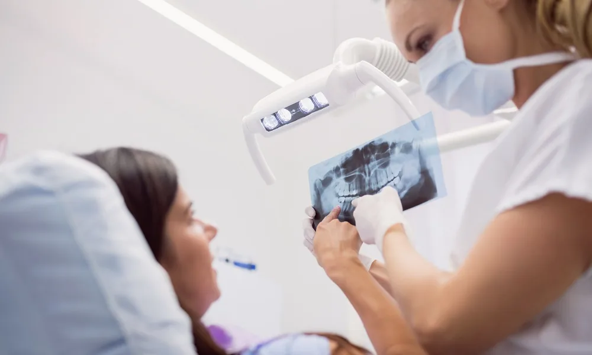

Zobni rentgen CBCT in ortopan
Zobni rentgen ali rentgensko slikanje je nepogrešljiv del sodobne zobozdravstvene diagnostike, saj omogoča natančen vpogled v strukturo zob, kosti in čeljusti. Z njegovo pomočjo lahko zobozdravnik hitro in zanesljivo odkrije težave, ki s prostim očesom niso vidne – od skritih kariesov do vnetij, poškodb korenin in sprememb v čeljustni kosti.
Naročite se na pregled →
O storitvi
V zobozdravstvenih centrih Diamant na lokacijah Ljubljana in Celje imamo na voljo sodobne digitalne rentgenske aparate, ki omogočajo varno, hitro in visoko kakovostno slikanje zob. Uporabljajo se za različne namene, med drugim za ortopan in CBCT 3D slikanje, ki omogoča tridimenzionalni prikaz celotne čeljusti.
Vse rentgenske storitve so opravljene v naši ordinaciji, kar pomeni, da celotno diagnostiko in zdravljenje dobite na enem mestu, brez čakanja in napotitev drugam.
Zobni rentgen Celje
Nizka doza sevanja
Sodobna digitalna dentalna rentgena Vatech Pax 3D Flex in Carestream Dental 8200 3D imata mnogokrat nižjo dozo sevanja kot starejši aparati.
Brez čakalnih dob
Za rentgensko slikanje ste lahko na vrsti takoj. Vseeno prosimo, da se pred obiskom najavite.
Priprava na slikanje zob
Za slikanje zob se naročite po telefonu ali elektronski pošti.
Pred preiskavo vam osebje razloži potek in vas prosi, da odstranite morebitni nakit ali kovinske predmete v predelu glave. Za slikanje ni potrebna posebna priprava, izjema so le izjemni primeri, o katerih vas predhodno obvestimo. Hvala za razumevanje, da spoštujete vse napotke, ki vam jih podamo.
Delovni čas se razlikuje glede na lokacijo in dan v tednu, zato je priporočljivo, da pred obiskom preverite trenutni urnik za ponedeljek, torek, sreda, četrtek in petek. Začasni delovni čas je lahko različen, zato je potrebno preveriti informacije pred slikanjem. Za naročanje nas lahko kontaktirate osebno ali preko elektronske pošte, kamor prejmete potrditveni termin in navodila. Postopek naročanja je hiter in pregleden.
Postopek zobnega rentgena
Postopek zobnega rentgena je hiter, traja le nekaj minut. Uporabljamo sodobne digitalne rentgenske aparate, ki zagotavljajo natančne slike z minimalno dozo sevanja. Po slikanju se posnetek takoj prikaže na zaslonu, zobozdravnik pa ga lahko nemudoma oceni in predstavi načrt nadaljnjega zdravljenja.
Vse slike se varno shranijo v digitalni obliki, tako da jih lahko po potrebi delimo tudi z vašim izbranim zobozdravnikom ali specialistom.
Vrste rentgenov, ki jih imamo
Ortopan (panoramski posnetek)
Zajame celotno zobovje, zgornjo in spodnjo čeljust, sinuse ter čeljustne sklepe. Uporablja se pri prvih pregledih, pred implantati, ortodontijo in pri načrtovanju zdravljenja.
CBCT (3D rentgen čeljusti)
Napredna 3D tehnologija, ki omogoča tridimenzionalni prikaz vseh struktur v ustih. Je nepogrešljiva pri implantologiji, modrostnih zobeh, endodontiji in ortognatski kirurgiji. CBCT zobni rentgen omogoča natančen prostorski vpogled, ki bistveno izboljša varnost in natančnost vsakega posega.
Obe preiskavi sta na voljo na obeh lokacijah Ljubljana in Celje.
Prednosti
Hitro in natančno – posnetek je narejen v nekaj minutah.
Digitalna tehnologija – manj sevanja, višja ločljivost.
Takojšnja analiza – zobozdravnik rezultate vidi takoj.
Vse na enem mestu – sodobni rentgenski aparati, ki omogočajo visoko kakovost slik, diagnostika in zdravljenje.
Udobni, moderni prostori – oprema nove generacije in prijetno okolje.
Enostaven dostop in parkiranje – pred vhodom ali v neposredni bližini.
Tveganja in stranske učinke
Digitalni zobni rentgen uporablja zelo nizko dozo sevanja. Kljub temu vedno uporabljamo zaščitno opremo, ki dodatno varuje pred izpostavljenostjo.
Nosečnicam se slikanje opravi le, če je nujno.
Alergije na kontrastna sredstva pri dentalnem rentgenu niso prisotne, saj se običajno ne uporablja kontrasta.
Postopek je neboleč, brez neprijetnih občutkov.
Zobozdravnik bo ocenil tveganja in stranske učinke pred slikanjem zob.
Pogosta vprašanja o rentgenskem slikanju zob
1. Ali je slikanje zob samoplačniško?
Da. Vsa rentgenska slikanja zob v centrih Diamant so samoplačniška. Napotnica ali delovni nalog nista potrebna, slikanje pa se opravi hitro in brez čakalnih dob po predhodni najavi.
2. Kje se nahajata lokaciji zobnega rentgena v Ljubljani in Celju?
📍 Lokacija v Ljubljani
DIAMANT, Zobozdravstveni center se nahaja na Dunajski cesti 154, 1000 Ljubljana, v pritličju Austria Trend Hotela. Ordinacijo najdeš takoj ob glavnem vhodu hotela, na desni strani ob restavraciji Winners Lounge. Parkiranje je mogoče v garažni hiši Smelt pod hotelom, z dostopom tako z Dunajske ceste kot severne ljubljanske obvoznice.
📍 Lokacija v Celju
DIAMANT, center za estetsko zobozdravstvo in implantologijo se nahaja na Opekarniški cesti 1, 3000 Celje, v objektu PSO Diamant, nasproti Celjskega sejma in trgovine Inpos. Ordinacija stoji ob glavni prometnici, je dobro označena in ponuja brezplačno parkiranje pred objektom in v njegovi neposredni bližini.
3. Katere vrste rentgenskega slikanja zob ponujate?
Na obeh lokacijah izvajamo ortopan, to je panoramski rentgenski posnetek celotnega zobovja, ter CBCT 3D slikanje, ki omogoča tridimenzionalni prikaz čeljusti, zob in kostnih struktur.
4. Ali je zobni rentgen varen in kakšna je izpostavljenost sevanju?
Da. Uporabljamo sodobne digitalne rentgenske aparate z nizko dozo sevanja, ki je manjša kot pri starejših napravah. Uporabljamo tudi zaščitno opremo. Postopek je varen in neboleč.
5. Kako poteka postopek zobnega rentgena in koliko časa traja?
Postopek je hiter in traja le nekaj minut. Pred slikanjem odstranite vse kovinske predmete, osebje pa vam razloži potek. Rentgenska slika je vidka takoj in se shrani v digitalni obliki.
Cena in plačilo
Cena slikanja zob je odvisna od vrste rentgenskega posnetka in lokacije, kjer se preiskava opravi. Pred samim slikanjem vas osebje vedno seznani s točnim zneskom ter morebitnimi dodatnimi stroški pri zobozdravniku, da je postopek popolnoma pregleden.
Plačilo lahko poravnate v gotovini ali z bančno kartico, na voljo je tudi plačilo z Leanpay.
Cena v eur
Ortopan
Osnovni 2D panoramski posnetek glave.
- 30 €
- CBCT - 3D slikanje čeljusti
Računalniška tomografija s stožčastim snopom prikaže trodimenzionalno sliko vašega skeleta in tkiv.
- CBCT 3D slikanje zob segment 5×5 cm
- 50 €
- CBCT 3D slikanje zob segment 8×5 cm – ena čeljust
- 70 €
- CBCT 3D slikanje zob segment 8×8 cm – obe čeljusti
- 90 €
Vse storitve
Imamo izkušnje, lahko vam pomagamo.
Za informativno ponudbo se naročite na neobvezujoč pregled.
Naročite se na pregled →Podobne storitve
Vse storitve →
Konzervativno in estetsko zobozdravstvo
Širok razpon preventivnega in estetskega zobozdravstva s poudarkom na estetiki.

Implantati
Manjkajoče zobe nadomestimo z zobnimi vsadki, implantati.

All-on-4
Če ste ali boste v kratkem izgubili vse zobe, vam jih metoda All-on-4 povrne v enem dnevu.

Beljenje zob
Sedaj si lahko posvetlite zobe že s samo enim obiskom v naši ordinaciji.